O Motion já sabe onde pôr cada peça e de que cor. Falta o acabamento: o que um programa de imagem faria por cima. Para isso há dois cartões, e cada um responde a uma pergunta:
| cartão | a pergunta | sobre o quê |
|---|---|---|
Filter | que efeito as formas do Motion levam? (relevo, sombra projectada, sombra interna, brilho, contorno, desfoque…) | as peças do Motion |
Lens | como a câmera vê a cena? | a cena inteira, tudo o que está na tela de desenho |
Os dois vão no fio que chega ao Output, e o fio passa por eles sem mudar: as
peças continuam as mesmas, o que muda é como saem pintadas. Podem pôr-se vários Filter
em fila — eles correm pela ordem do fio.
Cada Filter tem a linha Apply To, com duas opções:
| Apply To | o que faz | quando usar |
|---|---|---|
Each Shape | o efeito corre em cada forma sozinha, como se as outras não existissem. Duas formas que se tocam guardam cada uma a sua borda inteira. | relevo e sombra interna em cada peça; cada peça com a sua sombra |
Whole Layer | o efeito corre uma vez sobre todas as formas juntas, como se fossem um desenho só. Onde duas se tocam, viram uma peça. | a sombra de um grupo inteiro; um brilho à volta de tudo |
A ordem conta: depois de um Whole Layer as formas já foram juntas, logo um
Each Shape a seguir a ele não consegue voltar a separá-las. O cartão diz isso
por escrito.
Filter no fio, as peças do Motion
viram uma camada à parte (como uma camada no After Effects) e essa camada vai por cima do
resto da cena. Sem filtro, as peças do Motion misturam-se com os outros objectos pela ordem de
profundidade; com filtro, ficam todas à frente. Tire o filtro e elas voltam ao seu lugar.Cole isto inteiro num terminal. Na primeira vez ele compila (alguns minutos); depois abre em segundos.
Tint (a cor) vêm dois cartões Filter e um
Lens, e só então o Output. O 1.º Filter tem
Effect = Bevel (o relevo) e Apply To =
Each Shape. O 2.º tem Effect = Drop Shadow (a sombra
projectada) e Apply To = Whole Layer.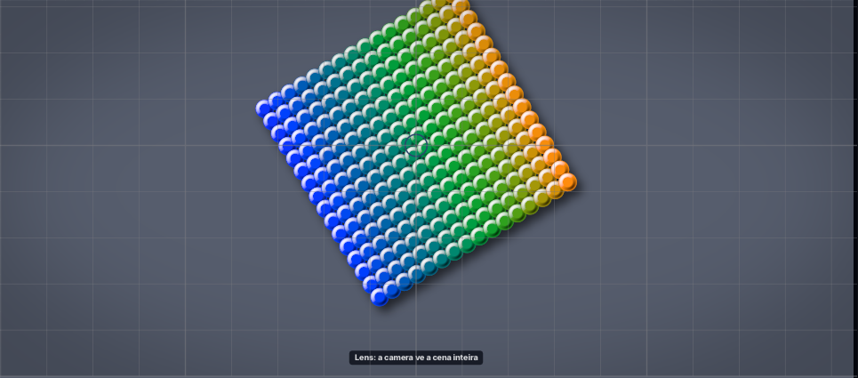
Filter, troque Apply To para Whole Layer.
Each Shape.
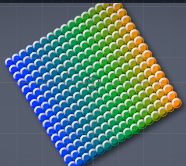
Each Shape: cada disco com a sua borda.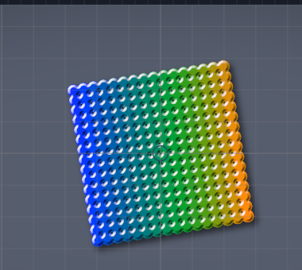
Whole Layer: os discos juntos.Filter, troque Effect para
Inner Shadow.
Effect: Outer Glow (um
brilho à volta), Inner Glow, Outline (contorno), Blur
(desfoque)…
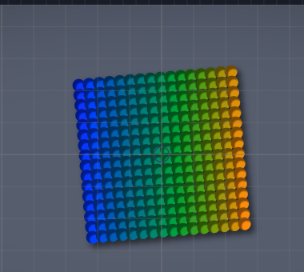
Inner Shadow em Each Shape: a mesma sombra em todos os
discos.Filter (Drop Shadow, Whole Layer).
Radius amacia a sombra; Offset X e Offset Y movem-na;
Opacity diz quão escura.Apply To dele para Each Shape.
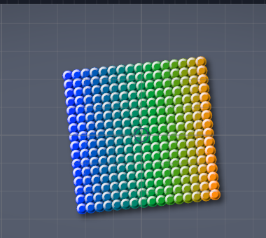
Each Shape: cada disco projecta a sua.Whole Layer e o 2.º em Each Shape.
O Lens é a câmera. Ele nasce só com a vinheta ligada; as outras secções estão
fechadas e neutras — abra cada uma para a ligar.
Lens, secção Vignette, arraste Vignette
para 0.
Chromatic Aberration e ponha Aberration em 0,03.
Color Grade. Temperature 0,5 esquenta tudo;
Saturation -1 deixa a cena cinzenta; Exposure 1 dobra a luz.LUT File, escreva
docs/Motion Nodes/tutoriais/luts/quente.cube.
LUT Mix aparece: ela diz quanto da LUT entra.Film Grain e ponha Grain em 0,4.
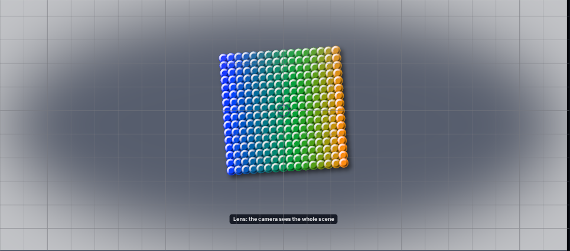
Vignette em -0,5: os cantos clareiam.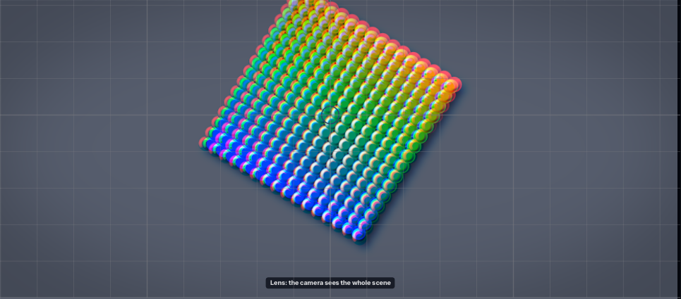
Aberration 0,03: a franja nas bordas.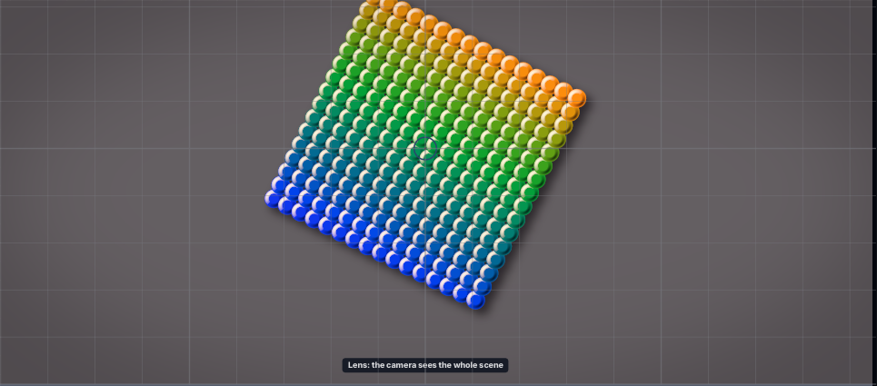
LUT File.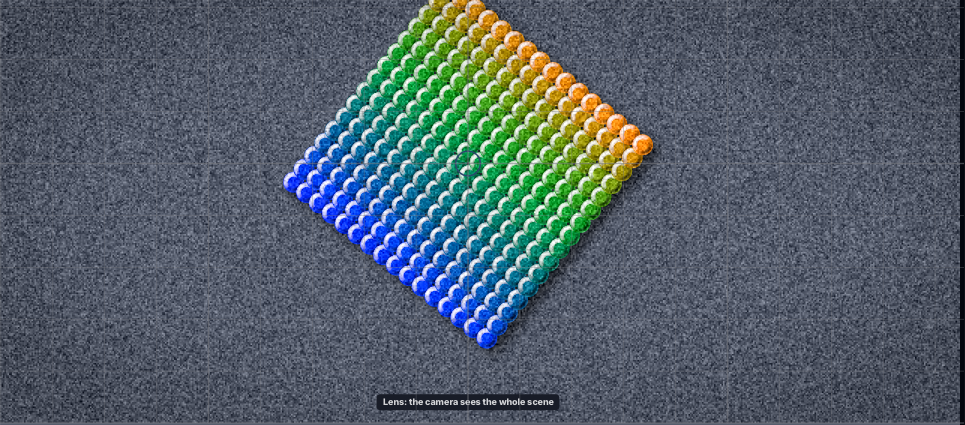
Grain 0,4.No cartão do Output, mude Blend para Add. Os discos passam a
somar luz ao que está por baixo: ficam mais claros, e o relevo continua em cada disco.
A sombra some — e está certo: somar uma cor escura quase não acrescenta nada. Os filtros correm
primeiro, na camada; o Blend vale quando a camada pousa na cena, como no After Effects.
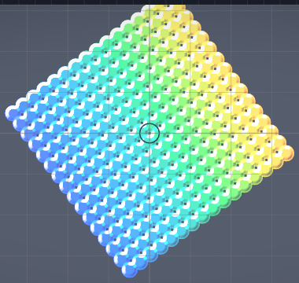
Add: o relevo fica, a sombra escura desaparece na soma.Como saber que errou: os discos ficam chapados, sem o brilho do relevo — reporte com uma foto.
Blend With escolhe com
quem: Scene mistura a camada com o que está por baixo; Copies mistura os
discos só entre si (a camada pousa normal); Everything faz as duas coisas. Com
Everything ou Copies, um filtro em Each Shape trata os discos
como uma peça só — o cartão do filtro avisa.No 1.º Filter, mude Effect para Gradient Map. Aparece a linha
Gradient: uma barra de degradê com bolinhas — as paradas. Cada disco ganha a cor
do degradê conforme a sua claridade: os escuros pegam a ponta esquerda, os claros a direita.
Debaixo da barra há quatro tirinhas coloridas, degradês prontos; a 1.ª é o arco-íris. Clique nela. Os discos vão do ciano ao violeta — a faixa do arco-íris que a claridade deles alcança. Arraste uma bolinha e as cores se movem.
No editor há ainda um botão que troca o espaço de cor (RGB, HSV, HSL, OKLab, OKLCH) e outro que troca a interpolação: eles mudam o caminho entre uma cor e outra, não as cores das paradas.
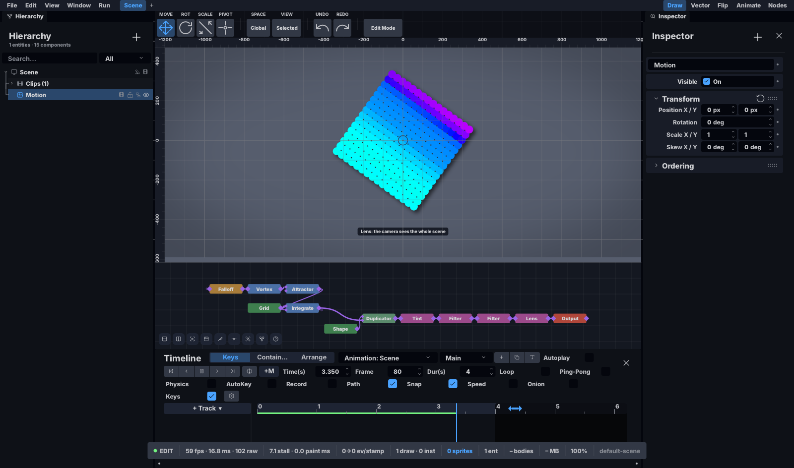
Gradient Map com o arco-íris: ciano nos escuros, violeta nos claros.Como saber que errou: o degradê não muda a cor dos discos.
Ainda no 1.º Filter, logo abaixo de Opacity há a linha Blend.
Mude para Multiply: o arco-íris passa a escurecer a cor de cada disco, em vez de
a trocar.
Blend só aparece nos efeitos que a usam — com Effect em Blur,
por exemplo, ela não existe.
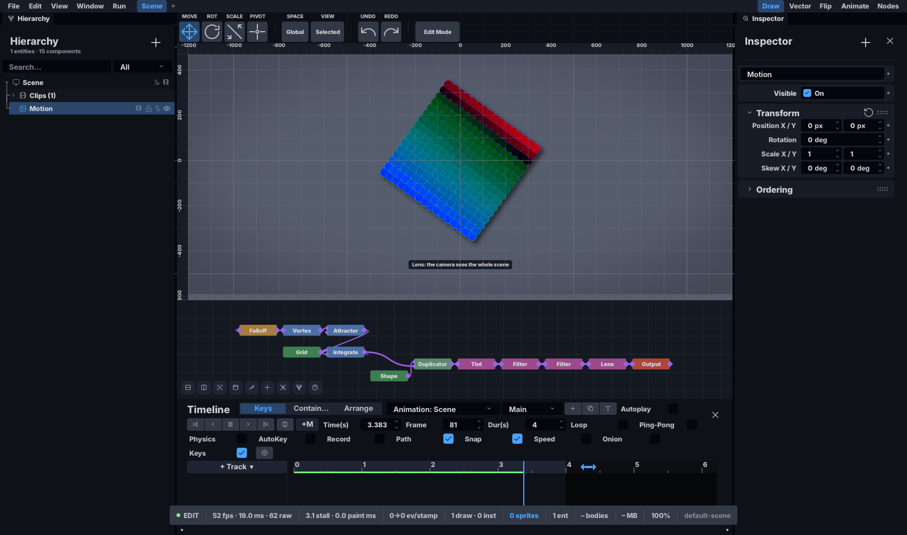
Multiply: a cor do disco fica, mais escura, tingida pelo degradê.Como saber que errou: a linha Blend aparece com Effect em
Blur.
Volte o 1.º Filter para Bevel. No cartão Output, ponha
Blend em Multiply e Blend With em Copies: os discos
passam a misturar-se só entre si. Onde dois se tocam, um tinge o outro e a cor fica mais
escura; o resto da galáxia fica como estava. Troque Blend para
Screen: onde se tocam, a cor clareia.
Essas misturas são desenhadas pela placa de vídeo, como o resto das formas — o terminal diz
«pela PLACA». Com a mistura ligada, o relevo do 1.º Filter passa a tratar a galáxia como
uma peça só (o cartão do Filter avisa): os discos misturados já não estão
separados.
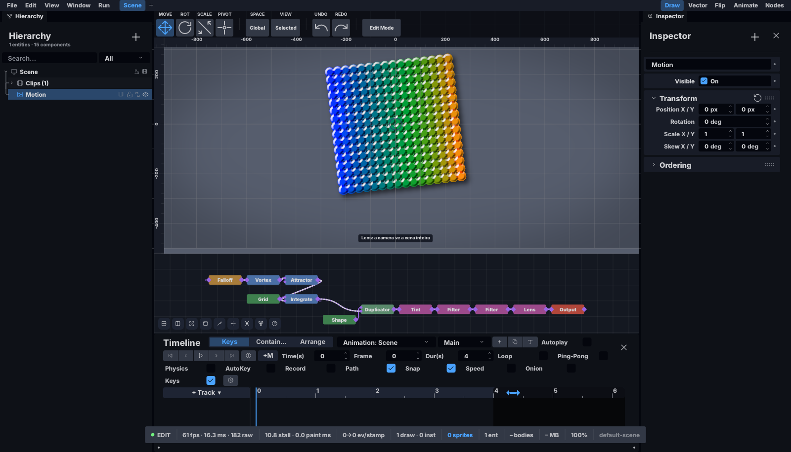
Multiply com Copies: mais escuro só onde os discos se tocam.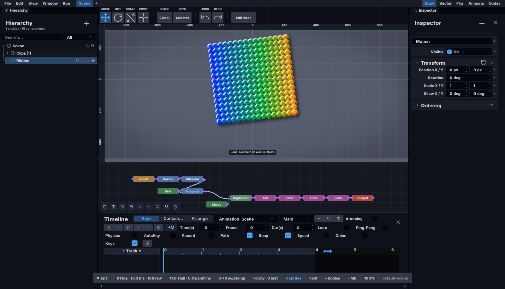
Screen com Copies: mais claro só onde os discos se tocam.Como saber que errou: a galáxia inteira escurece ou clareia (não só onde os discos se tocam), ou o terminal diz «pela cena Vello».
Medido nesta máquina, na placa de vídeo, com o computador ocupado por outros trabalhos — vale como ordem de grandeza. Um quadro a 60 por segundo tem 16,7 ms.
| o quê | janela 1600×972 | janela 4K |
|---|---|---|
um Filter em Whole Layer (a sombra interna), 4 096 discos |
0,4 ms | 0,9 ms |
o mesmo em Each Shape, 256 discos | 0,6 ms | 0,8 ms |
o mesmo em Each Shape, 4 096 discos | 4,6 ms | 4,9 ms |
a mistura com Everything ou Copies, 4 096 discos (na placa de
vídeo; antes, pelo desenho de vetor: 1,9 e 2,3 ms) |
0,4 ms | 0,7 ms |
o Lens com as quatro secções ligadas, na janela inteira |
0,4 ms | 1,8 ms |
Os filtros e a lente só trabalham na área da cena — o que fica por baixo dos painéis não
conta. Each Shape custa mais com muitas formas, porque cada uma corre sozinha; com
poucas formas os dois custam quase o mesmo.
| o que você vê | o que reportar |
|---|---|
| o relevo treme com a galáxia a girar | uma foto e o Effect |
em Each Shape, os discos do meio diferentes dos da beira | o
Effect e uma foto |
em Whole Layer, a borda continua entre discos que se tocam | uma foto |
| o efeito sai por cima dos painéis ou do grafo | uma foto da janela inteira |
| a franja aparece no centro | o valor de Aberration |
| o degradê não muda a cor dos discos | uma foto e o Effect |
a linha Blend aparece com Effect em Blur | uma foto |
com Copies, a galáxia inteira escurece ou clareia | uma foto e o
Blend |
| o terminal diz «pela cena Vello» nos passos da secção 13 | a linha inteira do terminal |
| o grão mexe com o tempo parado | se o relógio estava parado mesmo |